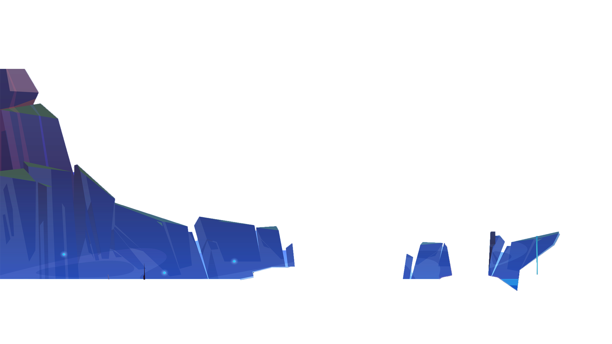
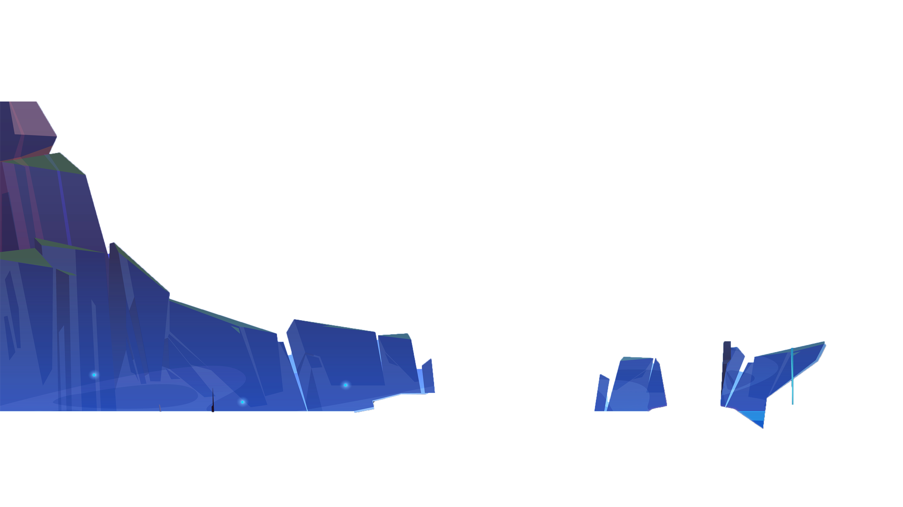

OVERVIEW
DIGITAL MARKETING
Digital marketing is the promotion of products,
services, or brands through the internet and digital
technologies. It involves creating and delivering
relevant and engaging content to target audiences across
various channels, such as websites, social media, email,
etc. Digital marketing aims to increase brand awareness,
generate leads, convert customers, and retain loyalty.
Digital marketing is different from traditional
marketing, which uses print, radio, or television.
Digital marketing is also data-driven, measurable,
interactive, and adaptable to changing customer needs
and preferences.
Some of the benefits of digital marketing are: it is
cost-effective, as it can reach a large number of people
with a low budget; it is measurable, as it can track and
analyze the performance and impact of the campaigns; it
is flexible, as it can be customized and personalized
according to the audience’s interests and behaviors; it
is interactive, as it can create a two-way communication
and feedback with the customers; and it is adaptable, as
it can respond quickly and effectively to the changing
market trends and customer demands.
FREELANCE SERVICES
Freelancers usually work on a short-term or part-time basis, and they are paid per project, per hour, or per task, depending on the agreement with the client. Freelancers can choose their own hours, location, and pace of work. They can also decide which projects and clients to work with, according to their interests and preferences. They can work on different types of projects and gain exposure to different industries and markets. They can also potentially earn more than full-time employees, depending on the demand and quality of their work. Freelancers may face irregular and unpredictable income, as they depend on the availability and satisfaction of their clients. They may have to compete with other freelancers or agencies for the same projects or clients. They may also have to handle all aspects of their business, such as marketing, accounting, legal, and administrative tasks. They also have to take care of their own health and well-being.
FOUNDER
A Computer Science student | Amity '26 | A Tech Enthusiast | Coder | Full Stack Web Developer | MERN | Winner of an International Title in Web Development so far